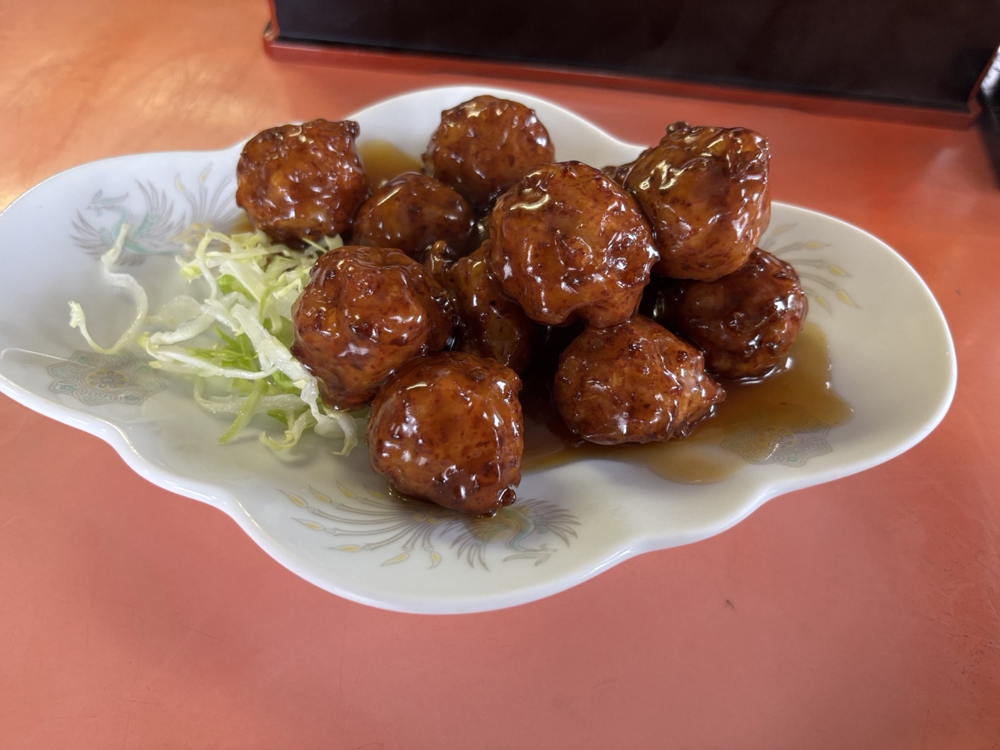
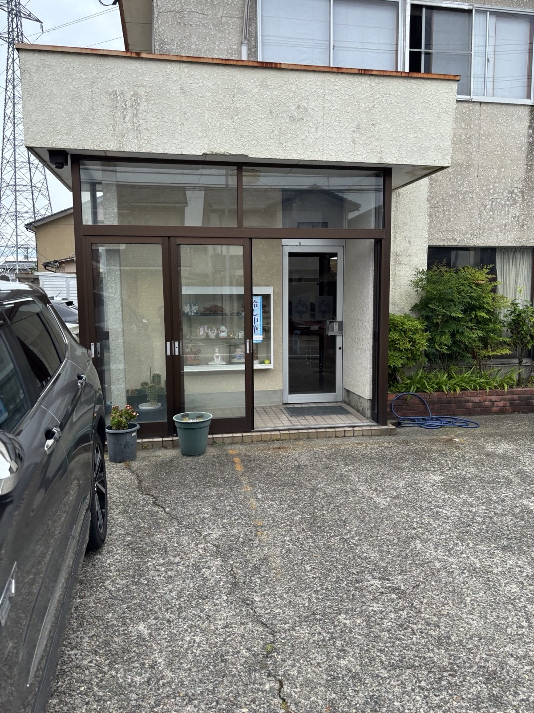
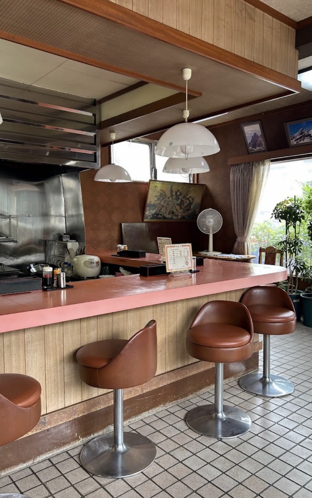
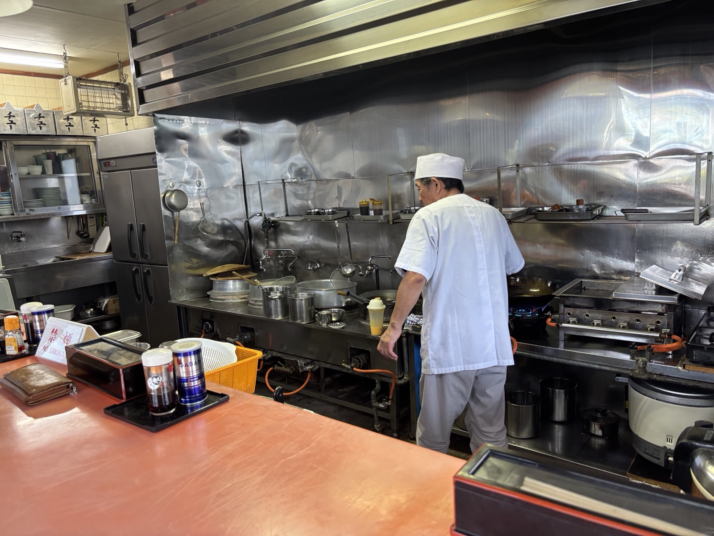
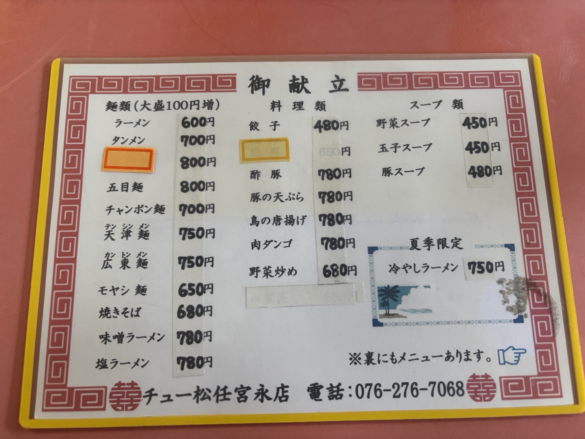

地元で愛され続ける、お昼の町中華
白山市宮永市町にある「中華料理チュー松任宮永店」は、昔から地元で出前もよく利用されてきた町中華です。現在はお昼のみの営業で、14時ごろには閉まってしまうことが多いお店ですが、日曜日も営業しており、お昼どきはあっという間に満席になります。
看板メニューはオムライスと肉ダンゴ。出前時代はカツカレーも一緒に頼んでいたそうですが、最近はオムライス一本槍。久しぶりに訪れても、変わらない美味しさでお客様が次々と入ってくる、地域に根づいた一軒です。
🍳
昔ながらのオムライス
ケチャップたっぷり、卵とライスのシンプルな美味しさ
🥩
看板の肉ダンゴ
甘辛い餡がたっぷり絡んだボリューム満点の一皿
🕧
お昼のみ営業
14時頃には閉店。日曜営業でお昼どきは満席必至
御献立営業中
看板のオムライス・肉ダンゴから、麺類・御飯類・スープ・お飲み物まで。（大盛は+100円）
人気メニュー

オムライス（大盛+100円）
750円〜

肉ダンゴ
780円
お店のようす




店舗情報
| 店名 | 中華料理 チュー松任宮永店 |
|---|---|
| 住所 | 〒924-0016 石川県白山市宮永市町480-1 |
| 電話番号 | 076-276-7068 |
| 営業時間 | お昼のみ営業（14時頃閉店の場合あり） |
| 食べログ | 中華料理チュー松任宮永店 - 食べログ |